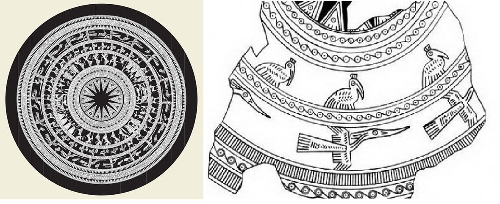

TƯỢNG HÌNH CỔ XƯA – HƠI THỞ CỦA HÔM NAY
Không ai biết chính xác chim lạc là loài chim thế nào. Nó không có tên trong bất kỳ tài liệu điểu học nào. Nhưng nó vẫn sống, trong ký ức tập thể của người Việt, qua hình bóng chim bay in nghiêng trên trống đồng Đông Sơn – mảnh ghép rực rỡ của văn minh Lạc Việt.

Chim lạc – mỏ dài, đuôi xòe, mào cao – không chỉ là hình khắc.
Nó là một lời thì thầm cổ đại, là khúc ca của những người đã dựng nên nước, là biểu tượng của trời, của mặt trời, của khát vọng vươn lên khỏi bùn đất, khỏi dòng thời gian.
Chúng mình không chọn chim lạc vì nó đẹp.
Chúng mình chọn nó vì nó “sống”.
VÌ SAO CHIM LẠC? VÌ SAO LÀ BÂY GIỜ?
Bởi bây giờ, hơn bao giờ hết, tụi mình cần một điều gì đó để neo mình lại – trong dòng chảy quá nhanh của thế giới.
Thời trang thường nói về xu hướng.
Tụi mình thì muốn nói về gốc rễ.
Chúng mình nhìn thấy trong chim lạc:
- Sự bí ẩn không dễ giải mã – như tâm hồn người Việt.
- Sự tự do tuyệt đối – như giấc mơ của một thế hệ mới.
- Và hơn hết, là tiếng gọi trở về với cái chất Việt, không cũ kỹ, không giáo điều – mà rất thơ, rất thật, rất bay.
Chim lạc trong tụi mình là...

Là những đường cắt táo bạo gợi nên cánh chim.
Là họa tiết lấy cảm hứng từ hoa văn trống đồng, được biến tấu để hòa vào nhịp sống hôm nay.
Là chất liệu giao thoa giữa cổ điển và hiện đại.
Là từng thiết kế mang theo hơi thở của đất, nắng, lửa, nước – những yếu tố làm nên văn hóa Đông Sơn.
Chim lạc không của riêng ai.
Nó là biểu tượng của một dân tộc. Nhưng trong bộ sưu tập này, tụi mình muốn bạn được khoác lên người chính tinh thần đó: một tâm thế bay cao, bay xa, bay tự do – nhưng luôn biết mình bay từ đâu.
"THANH LẠC" – BỘ SƯU TẬP ĐẦU TIÊN
Từ trống đồng đến đường phố.
Từ biểu tượng ngàn năm – thành cá tính ngày hôm nay.
Đây không chỉ là thời trang.
Đây là di sản văn hóa Việt.